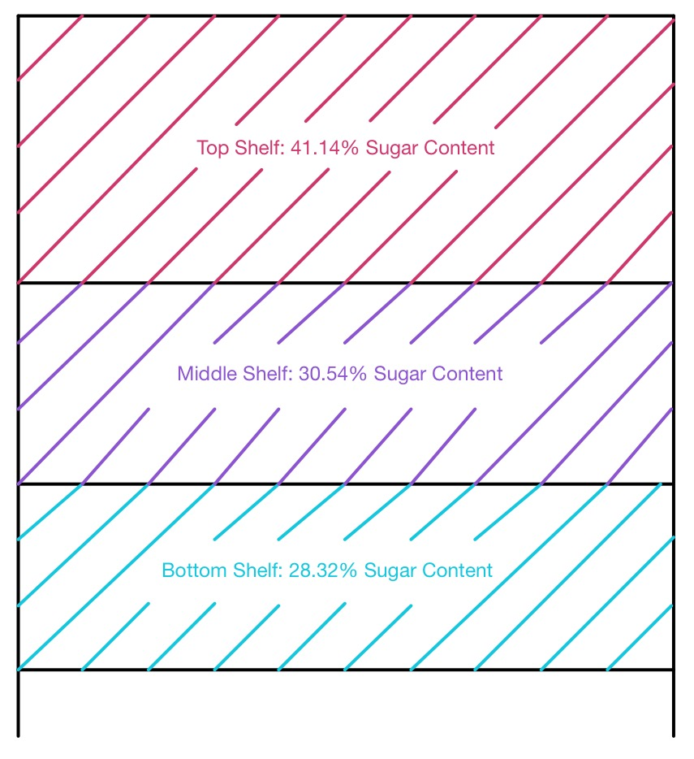
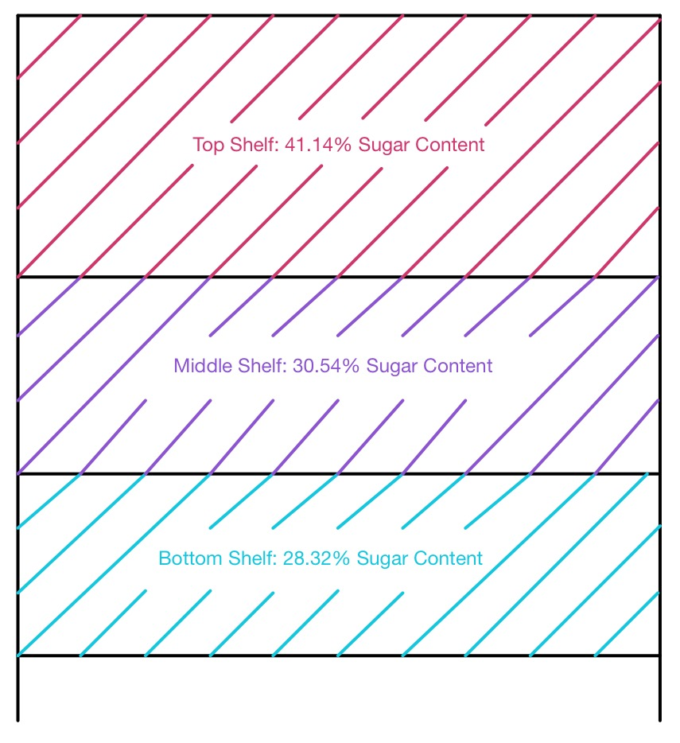

Joey Axelson, Blake Moorhead, Will Scheib

 

After looking at the data and several graphs, we came to the conclusion that the placement
of cereal on shelves does NOT contribute to childhood obesity. If anything, it tries to stop childhood
obesity. We think this because the cereals with the most sugar content are on the top shelves, away from
the reach and eyesight of little children.